نقشها
| نقش | محدوده |
|---|---|
| شهروند | ثبت شکایت حقیقی یا حقوقی، دیدن پاسخ شرکت و پاسخ نهایی پس از ثبت، اعلان، راهنمای خرید و بررسی بیمهنامه. پیشنهاد مسیر و پیشنویس را نمیبیند. |
| کارشناس شرکت بیمه | فقط شکایتهای ارجاعشده به شرکت خودش، ثبت پاسخ شرکت، و داشبورد همان شرکت. |
| کارشناس بیمه مرکزی | همه پروندهها، پیشنهاد مسیر، ارجاع، پاسخ نهایی، داشبورد کل و گزارش رویدادها. |
| مدیر سامانه | کار کارشناس، بهعلاوه بارگذاری آییننامه و مدیریت کاربران. |
رسیدگی به شکایت
شاکی به زبان خودش مینویسد. سامانه رشته و نوع را تشخیص میدهد، تاریخ و مبلغ را بیرون میکشد، تأخیر را با مهلت همان رشته میسنجد، ماده مرتبط را کنار پرونده میگذارد و برای کارشناس پیشنهاد اقدام و پیشنویس میسازد.
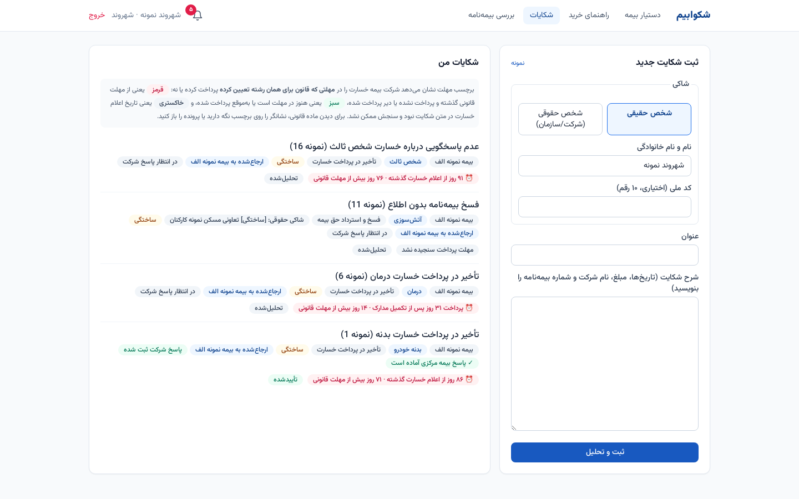
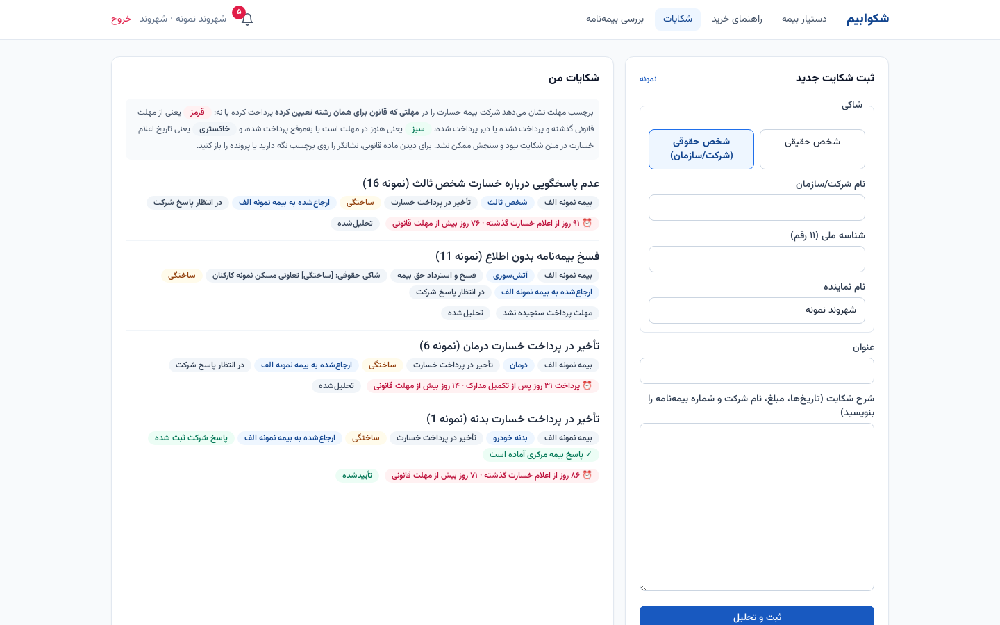
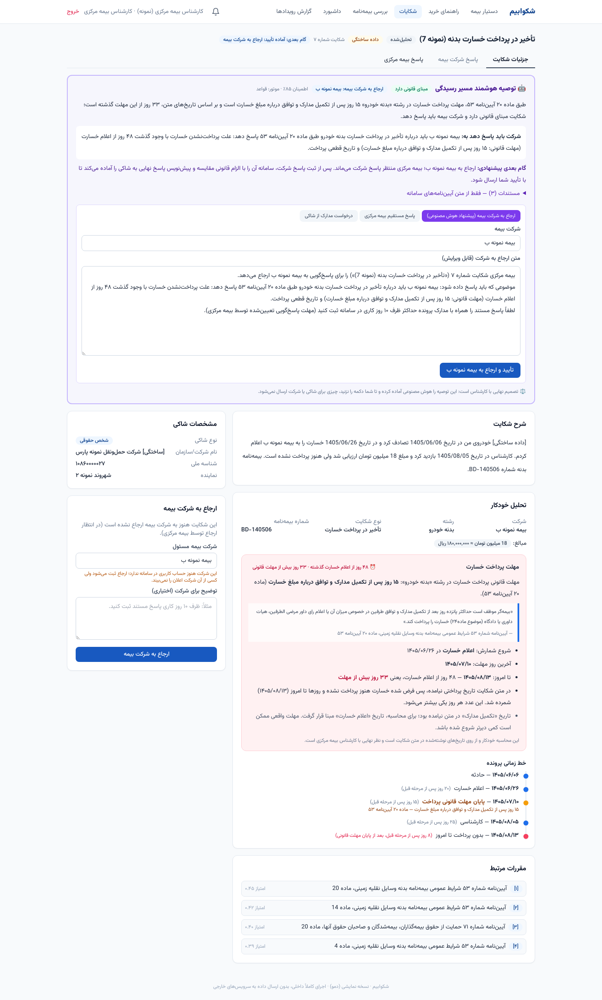
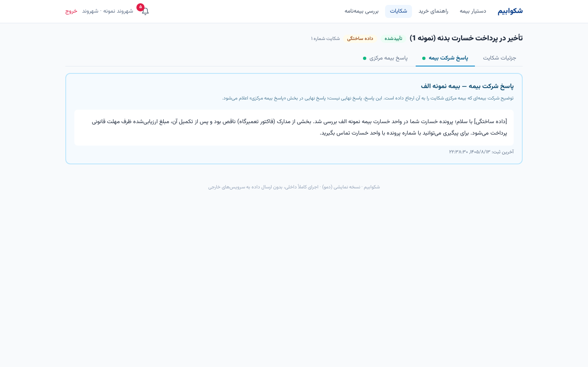
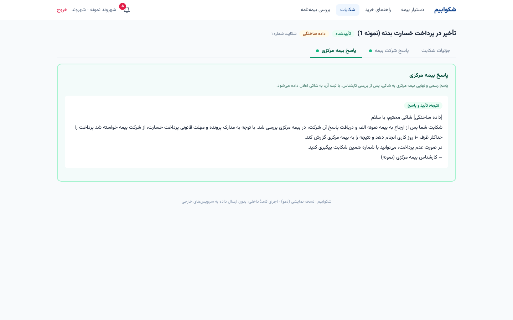
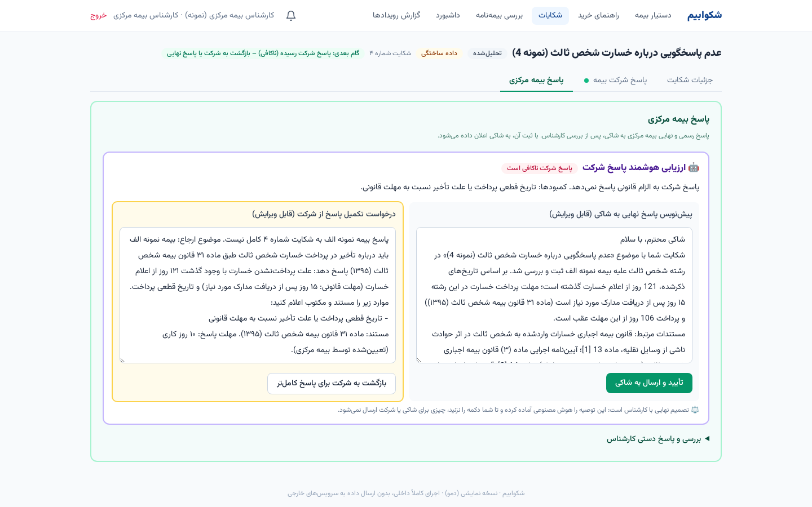
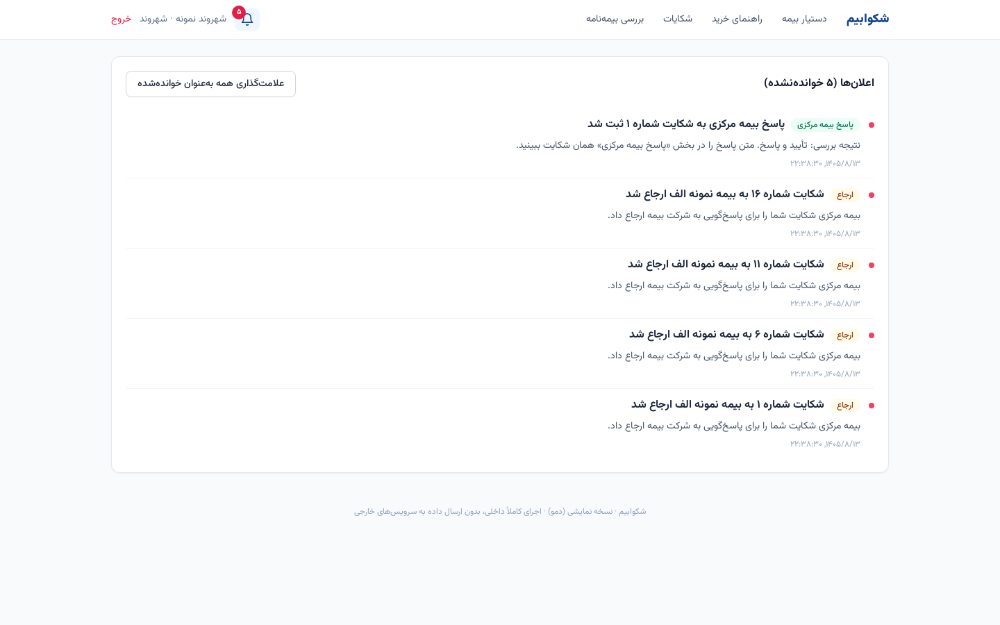
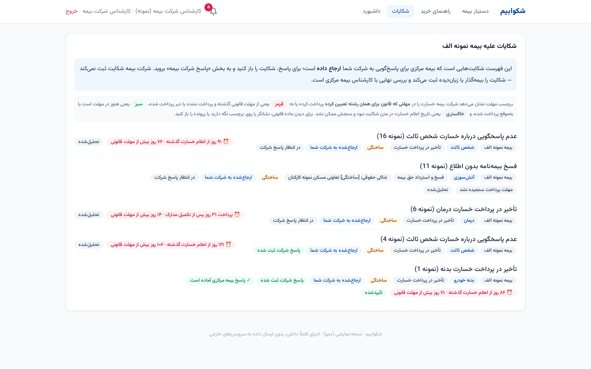
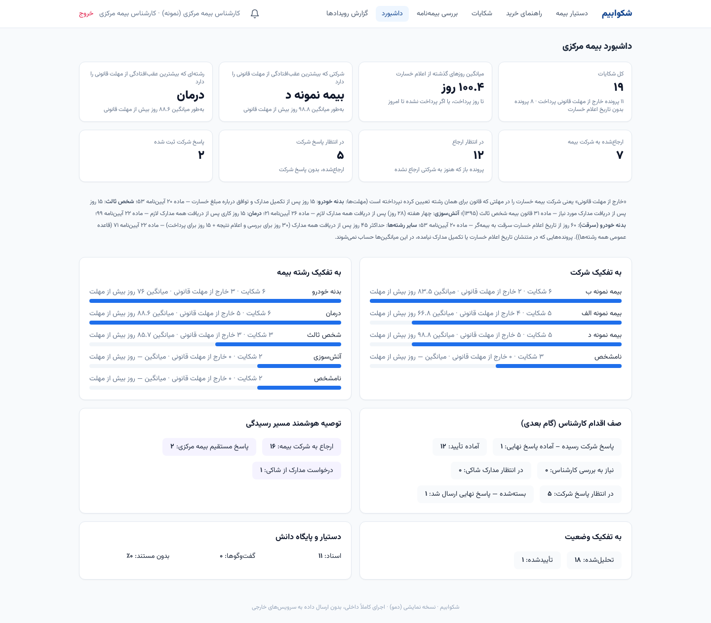
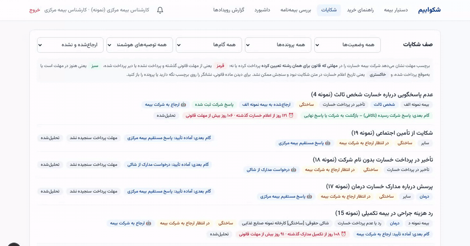
راهنمای خرید و بررسی بیمهنامه
راهنمای خرید پوشش الزامی و پیشنهادی را با استناد نشان میدهد و قیمت یا رتبهبندی شرکت نمیدهد. در بررسی بیمهنامه، «احتمال مغایرت» فقط با ماده پشتیبان صادر میشود؛ وگرنه نتیجه «نیازمند بررسی کارشناس» است.
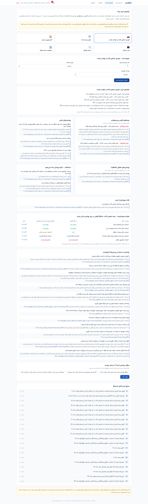
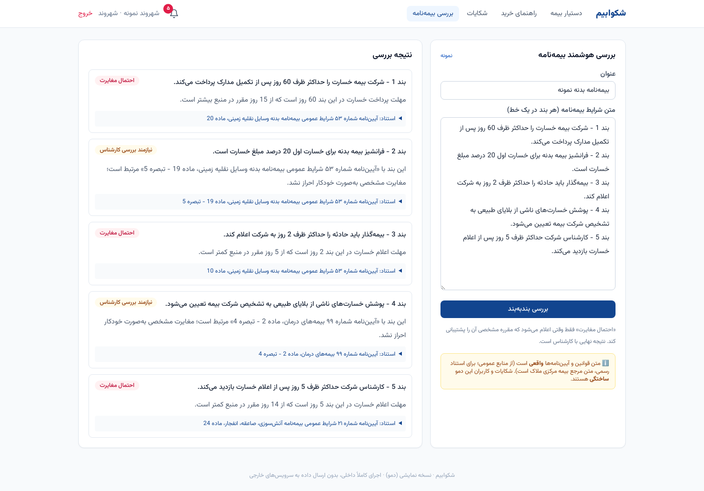
استناد، امتناع و گزارش رویداد
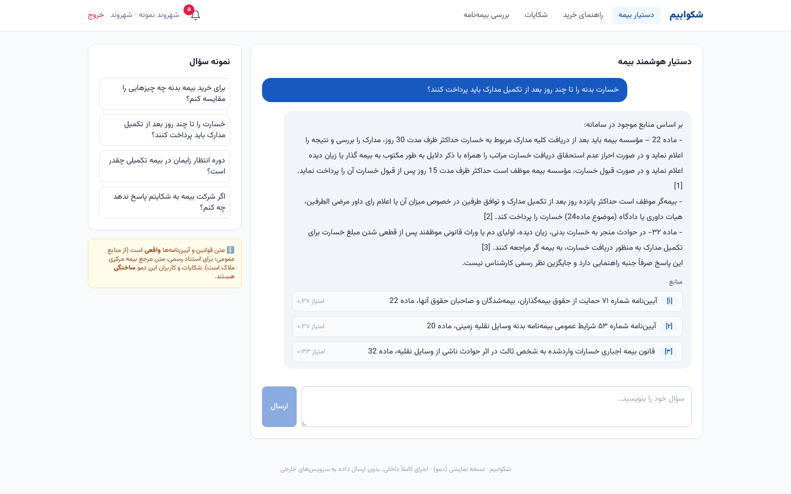
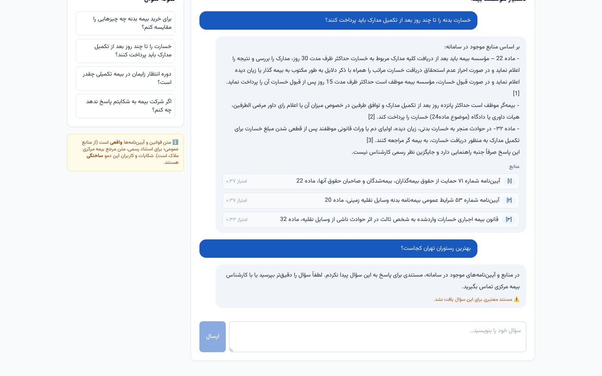
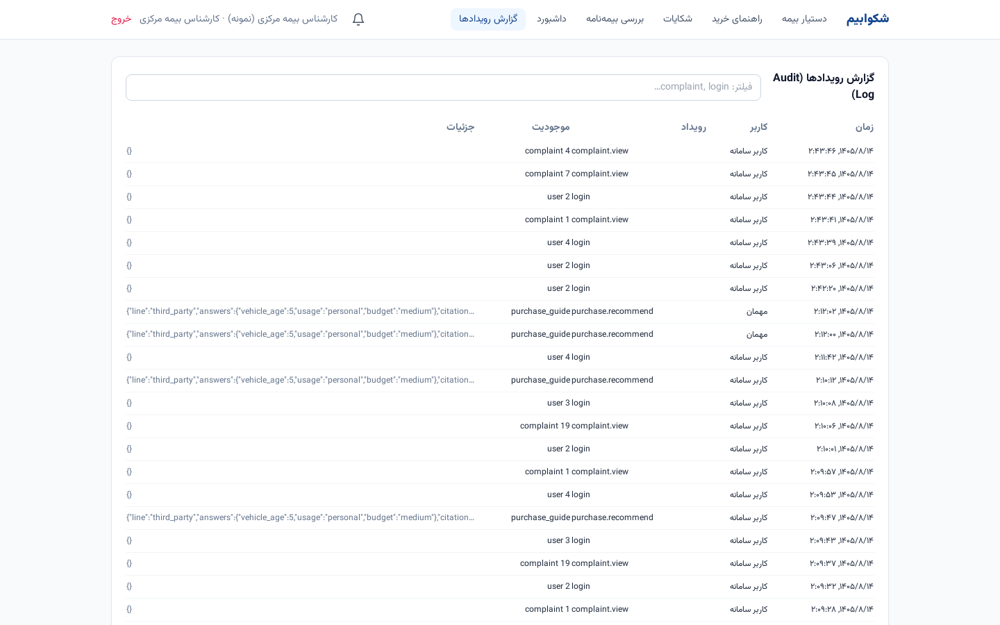
ساختهشده و مانده
| خواسته | نمونه اولیه | مانده |
|---|---|---|
| ثبت شکایت به زبان طبیعی، تشخیص رشته و نوع، تاریخ و مبلغ، خط زمانی | هست | پیوست اسکنشده؛ طبقهبندی رسمی بیمه مرکزی |
| استناد به ماده، پیشنهاد اقدام، پیشنویس، تأیید کارشناس | هست، در این نسخه با قاعده | مدل زبانی واقعی |
| ارجاع، دو زبانه پاسخ، اعلان، شاکی حقیقی و حقوقی | هست | |
| داشبورد تأخیر، راهنمای خرید، بررسی بیمهنامه، امتناع بیمنبع، گزارش رویداد | هست | روند زمانی؛ بازبینی پرسشها با کارشناس |
| خواندن سند اسکنشده، یادگیری مستمر، اتصال به سامانههای بیمه مرکزی | نیست | برنامهریزی شده |
English
shekvabim is a Persian complaint-handling and insurance-buying assistant for Central Insurance of Iran. A person files a complaint; the prototype classifies it, extracts dates and amounts, checks delay, cites the relevant article, and drafts a next step. An expert confirms before anything is sent. The insurer’s answer and the Central Insurance answer are separate. The buying guide and the policy review cite their sources and will not allege a violation without one. This demo runs on rules and a stand-in model. A real language model, OCR, continuous learning and system integration are planned, not built. Source code is available to evaluators on request.